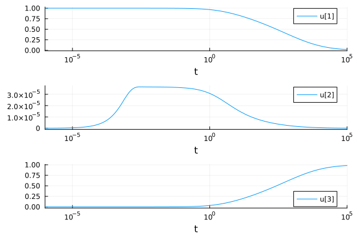
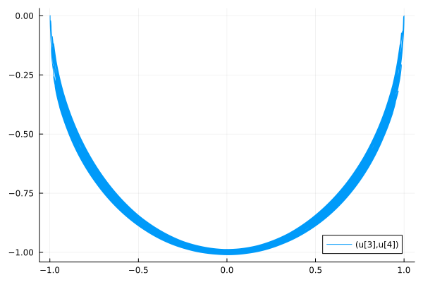
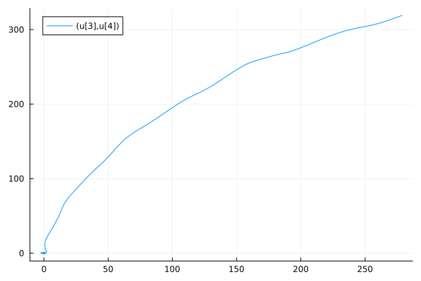

Differential-Algebraic Equation Modeling of a Double Pendulum (B)
Part 1: Simple Introduction to DAEs: Mass-Matrix Robertson Equations
using DifferentialEquations, Plots, Sundials
using OrdinaryDiffEqRosenbrock: Rodas5
function f(du, u, p, t)
du[1] = -p[1]*u[1] + p[2]*u[2]*u[3]
du[2] = p[1]*u[1] - p[2]*u[2]*u[3] - p[3]*u[2]*u[2]
du[3] = u[1] + u[2] + u[3] - 1.
end
M = [1 0 0; 0 1 0; 0 0 0.]
p = [0.04, 10^4, 3e7]
u0 = [1.,0.,0.]
tspan = (0., 1e6)
prob = ODEProblem(ODEFunction(f, mass_matrix = M), u0, tspan, p)
sol = solve(prob, Rodas5())
plot(sol, xscale=:log10, tspan=(1e-6, 1e5), layout=(3,1))Part 2: Solving the Implicit Robertson Equations with IDA
# Robertson Equation DAE Implicit form
function h(out, du, u, p, t)
out[1] = -p[1]*u[1] + p[2]*u[2]*u[3] - du[1]
out[2] = p[1]*u[1] - p[2]*u[2]*u[3] - p[3]*u[2]*u[2] - du[2]
out[3] = u[1] + u[2] + u[3] - 1.
end
p = [0.04, 10^4, 3e7]
du0 = [-0.04, 0.04, 0.0]
u0 = [1.,0.,0.]
tspan = (0., 1e6)
differential_vars = [true, true, false]
prob = DAEProblem(h, du0, u0, tspan, p, differential_vars = differential_vars)
sol = solve(prob, IDA())
plot(sol, xscale=:log10, tspan=(1e-6, 1e5), layout=(3,1))
Part 3: Manual Index Reduction of the Single Pendulum
Consider the equation: $ x^2 + y^2 = L $ Differentiating once with respect to time: $ 2x\dot{x} + 2y\dot{y} = 0 $ A second time:
\[\begin{align*} {\dot{x}}^2 + x\ddot{x} + {\dot{y}}^2 + y\ddot{y} &= 0 \\ u^2 + v^2 + x(\frac{x}{mL}T) + y(\frac{y}{mL}T - g) &= 0 \\ u^2 + v^2 + \frac{x^2 + y^2}{mL}T - yg &= 0 \\ u^2 + v^2 + \frac{T}{m} - yg &= 0 \end{align*}\]
Our final set of equations is hence
\[\begin{align*} \ddot{x} &= \frac{x}{mL}T \\ \ddot{y} &= \frac{y}{mL}T - g \\ \dot{x} &= u \\ \dot{y} &= v \\ u^2 + v^2 -yg + \frac{T}{m} &= 0 \end{align*}\]
We finally obtain $T$ into the third equation. This required two differentiations with respect to time, and so our system of equations went from index 3 to index 1. Now our solver can handle the index 1 system.
Part 4: Single Pendulum Solution with IDA
function f(out, da, a, p, t)
(L, m, g) = p
u, v, x, y, T = a
du, dv, dx, dy, dT = da
out[1] = x*T/(m*L) - du
out[2] = y*T/(m*L) - g - dv
out[3] = u - dx
out[4] = v - dy
out[5] = u^2 + v^2 - y*g + T/m
nothing
end
# Release pendulum from top right
# State: [u, v, x, y, T] where u=dx/dt, v=dy/dt
u0 = zeros(5)
u0[3] = 1.0 # x = 1 (pendulum starts horizontal)
du0 = zeros(5)
du0[2] = -9.8 # dv = y*T/(m*L) - g = 0 - 9.8 = -9.8 (gravity accelerates downward)
p = [1,1,9.8]
tspan = (0.,100.)
differential_vars = [true, true, true, true, false]
prob = DAEProblem(f, du0, u0, tspan, p, differential_vars = differential_vars)
sol = solve(prob, IDA())
plot(sol, idxs=(3,4))
Part 5: Solving the Double Pendulum DAE System
For the double pendulum: The equations for the second ball are the same as the single pendulum case. That is, the equations for the second ball are:
\[\begin{align*} \ddot{x_2} &= \frac{x_2}{m_2L_2}T_2 \\ \ddot{y_2} &= \frac{y_2}{m_2L_2}T_2 - g \\ \dot{x_2} &= u \\ \dot{y_2} &= v \\ u_2^2 + v_2^2 -y_2g + \frac{T_2}{m_2} &= 0 \end{align*}\]
For the first ball, consider x_1^2 + y_1^2 = L $
\[\begin{align*} x_1^2 + x_2^2 &= L \\ 2x_1\dot{x_1} + 2y_1\dot{y_1} &= 0 \\ \dot{x_1}^2 + \dot{y_1}^2 + x_1(\frac{x_1}{m_1L_1}T_1 - \frac{x_2}{m_1L_2}T_2) + y_1(\frac{y_1}{m_1L_1}T_1 - g - \frac{y_2}{m_1L_2}T_2) &= 0 \\ u_1^2 + v_1^2 + \frac{T_1}{m_1} - \frac{x_1x_2 + y_1y_2}{m_1L_2}T_2 &= 0 \end{align*}\]
So the final equations are:
\[\begin{align*} \dot{u_2} &= x_2*T_2/(m_2*L_2) \dot{v_2} &= y_2*T_2/(m_2*L_2) - g \dot{x_2} &= u_2 \dot{y_2} &= v_2 u_2^2 + v_2^2 -y_2*g + \frac{T_2}{m_2} &= 0 \dot{u_1} &= x_1*T_1/(m_1*L_1) - x_2*T_2/(m_2*L_2) \dot{v_1} &= y_1*T_1/(m_1*L_1) - g - y_2*T_2/(m_2*L_2) \dot{x_1} &= u_1 \dot{y_1} &= v_1 u_1^2 + v_1^2 + \frac{T_1}{m_1} + \frac{-x_1*x_2 - y_1*y_2}{m_1L_2}T_2 - y_1g &= 0 \end{align*}\]
function f(out, da, a, p, t)
L1, m1, L2, m2, g = p
u1, v1, x1, y1, T1,
u2, v2, x2, y2, T2 = a
du1, dv1, dx1, dy1, dT1,
du2, dv2, dx2, dy2, dT2 = da
out[1] = x2*T2/(m2*L2) - du2
out[2] = y2*T2/(m2*L2) - g - dv2
out[3] = u2 - dx2
out[4] = v2 - dy2
out[5] = u2^2 + v2^2 -y2*g + T2/m2
out[6] = x1*T1/(m1*L1) - x2*T2/(m2*L2) - du1
out[7] = y1*T1/(m1*L1) - g - y2*T2/(m2*L2) - dv1
out[8] = u1 - dx1
out[9] = v1 - dy1
out[10] = u1^2 + v1^2 + T1/m1 +
(-x1*x2 - y1*y2)/(m1*L2)*T2 - y1*g
nothing
end
# Release pendulum from top right
# State: [u1, v1, x1, y1, T1, u2, v2, x2, y2, T2]
u0 = zeros(10)
u0[3] = 1.0 # x1 = 1 (first pendulum horizontal)
u0[8] = 1.0 # x2 = 1 (second pendulum horizontal)
du0 = zeros(10)
du0[2] = -9.8 # dv2: gravity accelerates downward
du0[7] = -9.8 # dv1: gravity accelerates downward
p = [1,1,1,1,9.8]
tspan = (0.,100.)
differential_vars = [true, true, true, true, false,
true, true, true, true, false]
prob = DAEProblem(f, du0, u0, tspan, p, differential_vars = differential_vars)
sol = solve(prob, IDA())
plot(sol, idxs=(3,4))
plot(sol, idxs=(8,9))